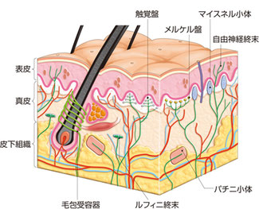

- 講師：饗場篤
- 参考文献：Neuroscience: Exploring the Brain, 3rd Edition
- 参考文献：Principles of Neurobiology
- 参考文献：カラー版 神経科学 −脳の探求−
感覚神経系(1)
感覚系の構成
- 1：外界や内界からの感覚刺激を電気信号に変換する装置
- 2：感覚細胞で生じた電気信号は、一次感覚ニューロンに始まる感覚神経のリレーにより中枢に伝達される。種々の感覚情報は、特定の伝達路を通り、大部分が3を経由して特定の4に到達する。
- 5（4）：感覚情報は、4の5（体性5、視覚野等…）を興奮させる

体性感覚
体性感覚系(somatosensory system)は、
- 受容体が体の一部ではなく、全身に分布 しており、皮膚・粘膜・関節・筋・腱など様々な場所から感覚を受け取る。
- 多様な刺激に対応するため、単一の感覚というよりも、少なくとも4つの感覚（6・7・8・9）によって構成されている。
- 6・7の刺激は機械的、もしくは熱・寒冷・化学物質
- 8の刺激は機械的刺激
- 9は、関節の屈曲度や筋の収縮度に関する感覚情報で、脳はこの感覚により身体各部の位置感覚、運動の状態、体に加わる抵抗感覚、重量感覚等の情報を得る。
という点で他の感覚系と異なっている。
感覚ニューロン
体性感覚系は、皮膚および筋肉全体から構成される最大の感覚器を有している。
体性感覚系の全ての感覚ニューロンの細胞体は、ヒトでは
- 10対の11：同じく10対の12と一対一の関係になっている。ただし、1つの11が切断されても、隣接する11が重複する領域を神経支配しているため、対応する13と同側の感覚が全て失われるわけではない。（3つの隣接する11が切断されると1つの13の感覚が消失する。）
- 14対の15：脳幹に隣接しており、顔の体性感覚を担っている。
|皮膚の分節構造|脊髄の分節構造|
|:-:|:-:|
| |
| |
|
※ 10対の12は、神経の始まる椎骨にちなんで名付けられている。
のいずれかに位置している。
皮膚の機械受容器
体性感覚系の受容器の多くは16であり、それぞれの受容器の中心部には無髄の神経突起の枝がある。これらの神経突起の終末は17を持っている。これらのイオンチャネルの開閉は、チャネル周囲の細胞膜の伸展や張力の変化に依存する。

皮膚の機械受容器を上図に示した。
|名称|役割|受容野の大きさ|順応| |:-:|:-|:-:|:-:| |18|真皮の深くに位置し、最大で2mm、多くは1mm程度であり、裸眼で見ることができるほど大きい|大きい|19| |20|有毛部および無毛部に見られ、18よりわずかに小さい。|大きい|21| |22|18の1/10程度の大きさで、無毛皮膚の隆起部（ex.指紋の隆起部）にある。|小さい|19| |23|表皮内にあり、神経終末と扁平な非神経性の上皮細胞からなる。|小きい|21|
なお、刺激の詳細な性質を識別する能力は、体の部分によって大きく異なっており、2点識別覚の結果は以下のようになる。指先が最も分解能が高い。これは、
- 指先の機械受容器の密度が体のどの部分よりも高い。
- 指先には小さな受容野を持つ受容器が多い。
- 多くの脳組織が、体の他の部分より指先の感覚の分析に充てられている。
- 脳には高分解能の識別を担う特別な神経機構がある。
などの理由が挙げられる。

一次求心性軸索
- 皮膚は豊富な神経支配を受けており、この軸索は末梢神経系の膨大なネットワークを形成し、中枢神経系に達している。
- 体性感覚受容器から脊髄、あるいは脳幹に情報を伝播する軸索は、体性感覚の24である。
- 24の径は様々であり、その太さは接続している感覚受容器の種類に関係している。

- 太い有髄神経線維（\(A\alpha,A\beta\)線維）は、伝達速度30-120m/sで速く、9と8を運ぶ。
- 細い有髄神経線維（\(A\delta\)線維;伝達速度4-30m/s ）、無髄神経線維（\(C\)線維;伝達速度0.5-2m/s）は7・6と一部の8（優しく撫でる等の快楽的な接触等）を運ぶ。
体性感覚野
全ての感覚野と同様に、体性感覚の処理の最も複雑な段階は大脳皮質で起こる。なお、体性感覚系に関連する皮質の大部分は、25にある。
ブロードマン3b野は現在、26とされており、中心溝のすぐ後ろにある中心後回と呼ばれる皮質に存在する。

S1野の皮質表面の電気刺激により、体の特定の部位の体性感覚を生じさせることができるので、これを用いて 皮質の体性感覚の体表面地図（27） を作ることができる。また、皮質の単一ニューロンの活動を記録して、そのニューロンの体性感覚受容野の体表面上の部位を明らかにする方法でも、これを作ることは可能である。

上記の27からは、
- 地図は必ずしも連続しているのではなく、分離されていることもあること。（ex.手の部位再現は顔や頭からは分離している。また、外陰部は足指の下にあり、最も深い隠された位置にある。）
- 体性感覚地図を立体で表現した28を見ると、28はヒトの体の相似形ではなく、むしろ戯画のように見えること。体のそれぞれの部位に当てられる皮膚の相対的な大きさは、その部位からの感覚入力の密度（≒重要性）に関係を持っている。
がわかる。なお、皮質地図は感覚 経験 の量に応じて動的に変化することが知られている。（刺激を消失させると、その場所に与えられていた皮膚部位は隣接部位に当てられる/刺激が増加された場合、刺激された部位が拡大。）
シナプス伝達
シナプスには2つの面、29と30がある。シナプス前側は一般に軸索終末で、直径約50nmのシナプス小胞が多数含まれている。シナプス小胞は31を含み、これを用いて 他のニューロンの樹状突起や細胞体 からなるシナプス後側と情報伝達を行なっている。シナプス前膜とシナプス後膜の間は、20-50nmの32がある。
31のシナプス前からの放出によって引き起こされる 短時間の シナプス後膜の
- 33は、34と呼ばれている。これは、アセチルコリンおよびグルタミン酸動性イオンチャネルで、リガンドが結合すると、非選択的陽イオンチャネルが開口し、\(\mathrm{Na}^{+}\)や\(\mathrm{K}^{+}\)の陽イオンを通過させる。
- 35は、36と呼ばれている。GABA、グリシン作動性チャネルはリガンドの結合により、陰イオン、主に\(\mathrm{Cl}^{-}\)を選択的に通過させる。
神経伝達物質
37
多くのニューロンはただ1つの神経伝達物質（アミノ酸、アセチルコリン、モノアミン）を持つ。一方、神経ペプチドを含む多くのニューロンは、アミノ酸、アセチルコリンあるいはモノアミンと神経ペプチドを放出する。
主要な神経伝達物質としては以下が挙げられる。
|種類|神経伝達物質|説明| |:-:|:-|:-| |アミノ酸|グルタミン酸(Glu)|中枢神経系の38ニューロンのほとんど、感覚ニューロンのほとんど| |アミノ酸|GABA(γ-アミノ酸)|中枢神経系の39ニューロンのほとんど| |アミノ酸|グリシン(Gly)|中枢神経系の39ニューロンの一部（脳幹や脊髄に存在）| ||アセチルコリン(Ach)|筋肉を興奮させる運動ニューロン、自律神経系のニューロン（交感神経の節後以外全て）、中枢神経系の興奮性および調節性ニューロン| |モノアミン(monoamine)|セロトニン(5-HT)|中枢神経系の40ニューロン| |モノアミン(monoamine)|ドーパミン(DA)|中枢神経系の40ニューロン| |モノアミン(monoamine)|ノルアドレナリン(NA)|中枢神経系の40ニューロン、自律神経系のニューロン（交感神経の節後ニューロン）| |モノアミン(monoamine)|ヒスタミン|中枢神経系の40ニューロン| ||神経ペプチド|38、39、40のニューロンから共放出、神経内分泌細胞|